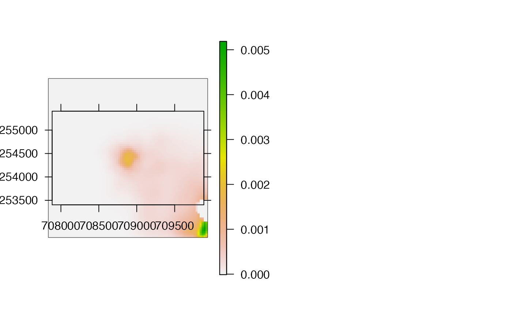
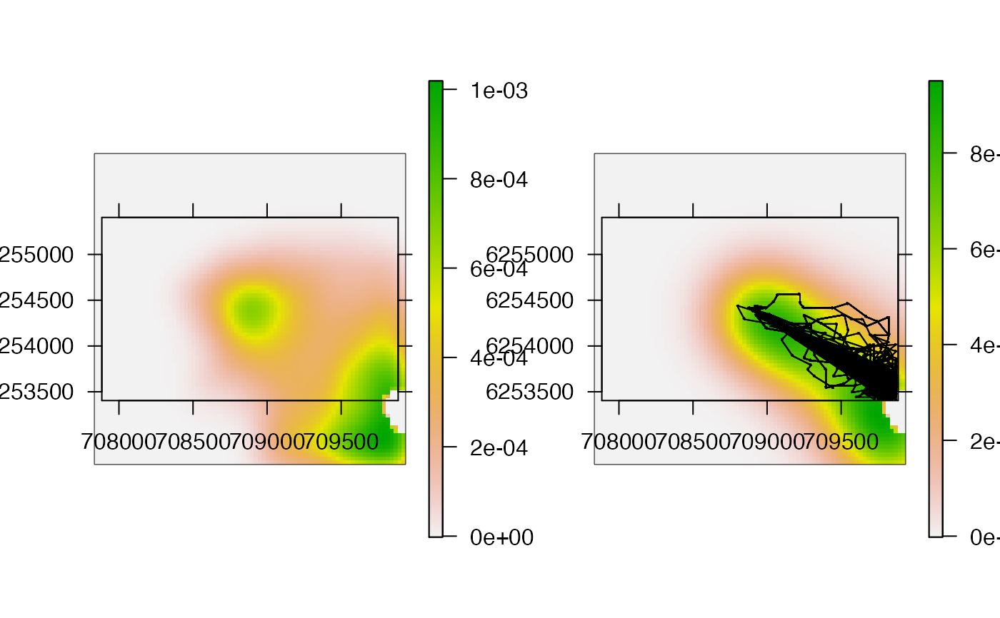
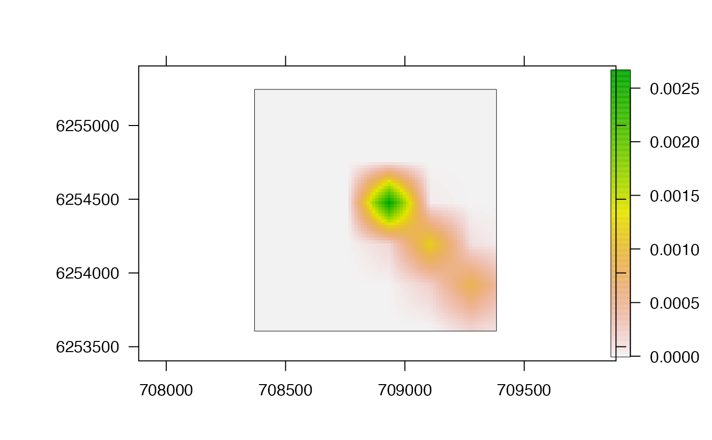
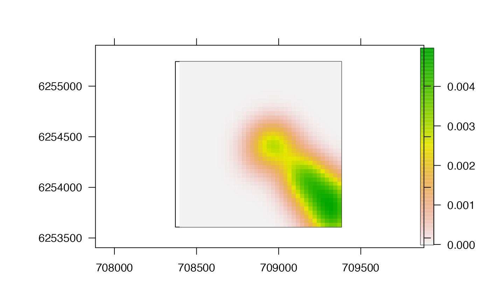
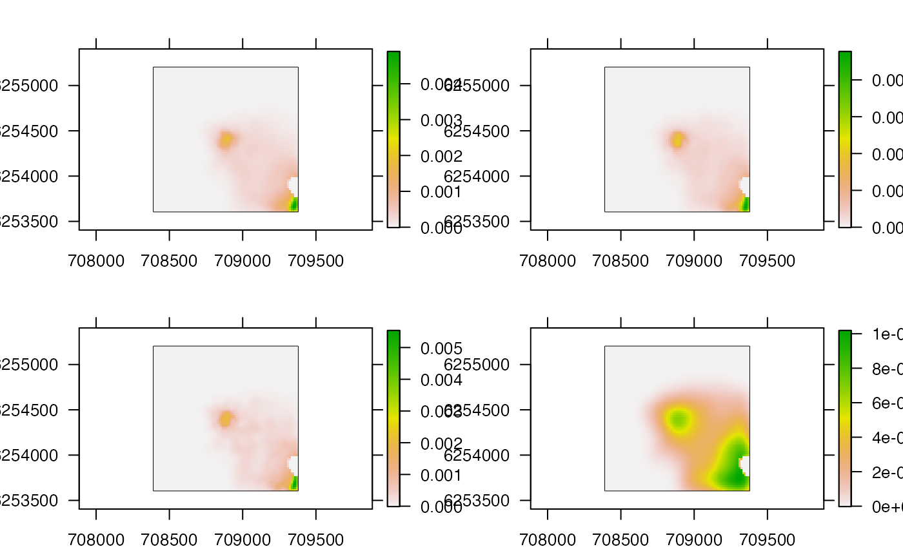
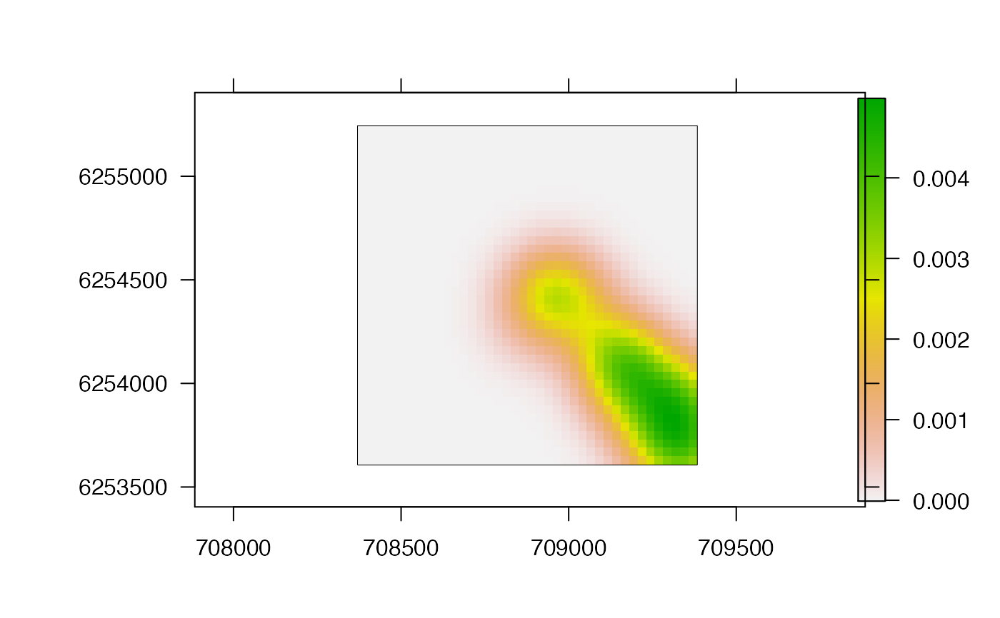

This function smooths proportion-of-use (POU) maps (from pf_plot_map) by applying kernel utilisation distribution (KUD) estimation. Depending on the implementation, following optional initial time trials, using a subset, all or an expanded sample of POU locations, the function applies a KUD smoother via a user-supplied estimation routine (i.e., kernelUD or kud_around_coastline). The function extracts the KUD as a raster, applies a spatial mask (e.g., coastline), plots the processed KUD (if specified) and returns this as a raster.
A POU raster object (from pf_plot_map).
(optional) An integer expansion factor for the number of locations used for KUD estimation. If supplied, \(n\) locations are randomly sampled from xpf with replacement in line with their probability, where \(n = n_{pou} \times sample_size\) and \(n_{pou}\) is the number of non-zero POU scores. This resampling approach avoids treating locations as `relocations'.
A function (either kernelUD or kud_around_coastline) that estimates the KUD.
Arguments passed to estimate_ud (and ultimately kernelUD, where they are defined) to estimate the KUD. If kud_around_coastline is supplied to estimate_ud, then grid must be a SpatialPixelsDataFrame. The resultant KUD is resampled onto xpf.
(Optional) Lists that define the numbers of locations (cells) and the grids used for time trials. If either trial_cells or trial_grids is supplied, the function implements estimate_ud for small (trial) numbers of cells and any grid(s) specified. If trial_cells is supplied, but not trial_grids, then grid is used for estimation. If trial_grids is supplied but not trial_cells, then time trials are implemented for each grid with 10, 50 and 100 locations. For each grid, the linear regression of the time required to estimate the KUD is plotted against the number of locations and used to predict the time required to fit the KUD to all locations. The user is then asked whether or not to continue with estimation across all locations.
(optional) A spatial mask (see mask).
A logical input that defines whether or not to plot the KUD.
A logical input that defines whether or not to print messages to the console to monitor function progress.
The function (a) plots the outcomes of time trials (if requested), (b) estimates and plots a KUD (if requested) and (c) returns a raster of the KUD.
For computational efficiency, it may be necessary to aggregate (and renormalise) POU scores across the grid used for estimation before implementing this function.
#### Define POU map for examples
out_dcpf_s <- pf_simplify(dat_dcpf_histories,
summarise_pr = TRUE,
return = "archive")
#> flapper::pf_simplify() called (@ 2023-02-19 15:02:52)...
#> ... Getting pairwise cell movements based on calc_distance = 'euclid'...
#> ... ... Stepping through time steps to join coordinate pairs...
#> ... ... Identifying connected cells...
#> ... ... Processing connected cells for return = 'archive'...
#> ... flapper::pf_simplify() call completed (@ 2023-02-19 15:02:52) after ~0.01 minutes.
out_dcpf_pou <- pf_plot_map(out_dcpf_s, dat_dcpf_histories$args$bathy)
#> prettyGraphics::pretty_map() CRS taken as: 'NA'.

#### Example (1): Implement function using default options
pf_kud(xpf = out_dcpf_pou, grid = 10)
#> flapper::pf_kud called (@ 2023-02-19 15:02:52)...
#> ... Setting up function...
#> CRS taken as: 'NA'.
#> ... Getting POU scores...
#> ... .... POU scores extracted for 41 locations...
#> ... Building SpatialPointsDataFrame...
#> ... Implementing KUD estimation based on 41 cells...
#> ... Processing KUD(s)...
#> ... Plotting KUD...
#> prettyGraphics::pretty_map() CRS taken as: 'NA'.

#### Example (2): Implement function using resampling
pf_kud(xpf = out_dcpf_pou, sample_size = 100, grid = 10)
#> flapper::pf_kud called (@ 2023-02-19 15:02:52)...
#> ... Setting up function...
#> CRS taken as: 'NA'.
#> ... Getting POU scores...
#> ... .... POU scores extracted for 41 locations...
#> ... Sampling cells...
#> ... ... POU locations expanded to 4100 locations...
#> ... Building SpatialPointsDataFrame...
#> ... Implementing KUD estimation based on 4100 cells...
#> ... Processing KUD(s)...
#> ... Plotting KUD...
#> prettyGraphics::pretty_map() CRS taken as: 'NA'.

#### Example (3): Implement time trials
if(interactive()){
# Implement time trials for specified numbers of cells
pf_kud(xpf = out_dcpf_pou,
sample_size = 100,
grid = 60,
trial_cells = list(10, 100, 1000, 10000))
# Implement time trials for specified grids
pf_kud(xpf = out_dcpf_pou,
sample_size = 100,
grid = 180,
trial_grids = list(60, 120, 180))
# Implement time trials for specified numbers of cells and grids
pf_kud(xpf = out_dcpf_pou,
sample_size = 100,
grid = 10,
trial_cells = list(10, 100, 1000, 10000),
trial_grids = list(10, 30, 60))
}
#### Example (4): Force alignment between POU scores and grids for speed
# Example with numeric grid
out_dcpf_pou_agg <-
raster::aggregate(out_dcpf_pou, fact = 2)
out_dcpf_pou_agg <-
out_dcpf_pou_agg/raster::cellStats(out_dcpf_pou_agg, "sum")
grid <- raster::res(out_dcpf_pou_agg)[1]
pf_kud(out_dcpf_pou_agg, grid = grid)
#> flapper::pf_kud called (@ 2023-02-19 15:02:52)...
#> ... Setting up function...
#> CRS taken as: 'NA'.
#> ... Getting POU scores...
#> ... .... POU scores extracted for 31 locations...
#> ... Building SpatialPointsDataFrame...
#> ... Implementing KUD estimation based on 31 cells...
#> ... Processing KUD(s)...
#> ... Plotting KUD...
#> prettyGraphics::pretty_map() CRS taken as: 'NA'.

# Example with SpatialPixels grid
grid <- kud_habitat(out_dcpf_pou_agg)

pf_kud(out_dcpf_pou_agg, grid = grid)
#> flapper::pf_kud called (@ 2023-02-19 15:02:53)...
#> ... Setting up function...
#> CRS taken as: 'NA'.
#> ... Getting POU scores...
#> ... .... POU scores extracted for 31 locations...
#> ... Building SpatialPointsDataFrame...
#> ... Implementing KUD estimation based on 31 cells...
#> ... Processing KUD(s)...
#> ... Plotting KUD...
#> prettyGraphics::pretty_map() CRS taken as: 'NA'.
